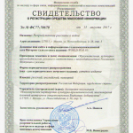

28 апреля 2011
О проекте
Идея создания проекта «Непридуманные рассказы о войне» принадлежит известному московскому священнику протоиерею Глебу Каледе. Каледа Глеб Александрович (1921-1994 гг.) — священник Русской Православной Церкви, протоиерей; церковный писатель; доктор геолого-минералогических наук, профессор. В начале Великой Отечественной войны был призван в Красную армию. С декабря 1941 года находился в действующих частях. В качестве радиста дивизиона гвардейских минометов «Катюш» участвовал в битвах под Волховом, Сталинградом, Курском, в Белоруссии и под Кенигсбергом. Был награжден орденом Красного Знамени и Отечественной Войны. Его воспоминания опубликованы одними из первых на страницах сайта.
Цель проекта – непредвзятое освещение героических и трагических событий Второй Мировой и Великой Отечественной войн.
Задачи проекта – попытка формирования объективной картины Великой Отечественной Войны. Показать роль советского народа в Победе над фашизмом и соотнести ее с вкладом союзников. Противодействие манипуляциям современных последователей нацизма. Также одной из своих задач имеет освещение деятельности Русской Православной Церкви в годы войны.
На сегодняшний день существует несколько концепций войны, опирающихся не на факты, а на идеологические посылки. Например, в советской историографии войну выиграл социалистический строй. Западная историография приписывает успехи в победе над фашистской Германии себе, умаляя роль советского народа. Многочисленные исторические мемуары, опубликованные в последние годы, имеют тот же недостаток, так как подвергались идеологической обработке и редактированию.
Сейчас, когда идеологический прессинг в нашей стране отсутствует, мы публикуем истории о войне, рассказанные непосредственными участниками событий.
Особенность проекта — наличие переводных материалов: воспоминания участников войны из других стран – немцев, англичан, американцев, итальянцев, греков и т.д. Интернет-портал имеет русскую, английскую и немецкую версии.
Проект «Непридуманные рассказы о войне» существует с марта 2005 года, не имеет финансирования, развивается силами энтузиастов.
Работа проекта «Непридуманные рассказы о войне» была отмечена в 2010 году на IX Всероссийском конкурсе за лучшее освещение в средствах массовой информации темы патриотического воспитания «Патриот России». Проект занял I место в номинации «Дети войны».
В июне 2011 года Интернет-проектом «Непридуманные рассказы о войне» www.world-war.ru совместно с Институтом повышения квалификации руководящих кадров и специалистов системы социальной защиты населения г. Москвы (ipk.dszn.ru) была организована акция «Память», приуроченная к 70-летию начала Великой Отечественной войны. Проведена работа по сбору воспоминаний ветеранов войны и тружеников тыла, находящихся на обслуживании в социальных учреждениях города Москвы. Собранные материалы опубликованы на сайте и находятся в свободном доступе.
В ноябре 2011 года руководитель протоиерей Александр Ильяшенко и коллектив проекта «Непридуманные рассказы о войне» заняли I место среди участников межрегионального конкурса журналистского мастерства «Слава России» в номинации «Слава России – Великая Отечественная».
Материалы сайта www.world-war.ru используются в проведении школьных уроков по истории, для написания рефератов и курсовых работ.